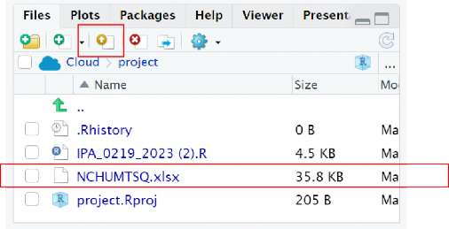
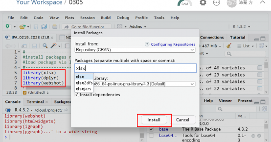
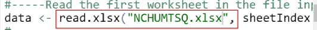
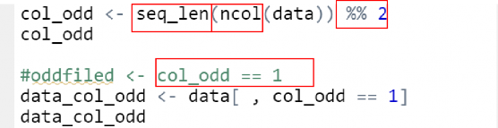
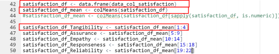
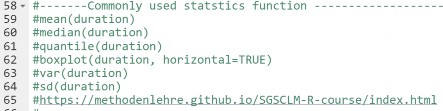
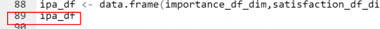
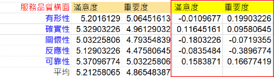
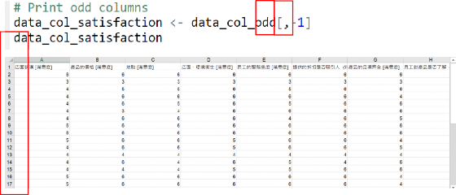
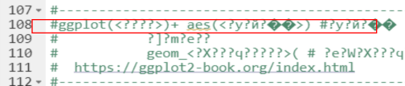

上傳問卷匯出的 EXCEL 檔案

PackageInstall依序輸入左上檔案 library 括號內的檔案類型，並按下 run
鍵，讀取該檔案類型的 data

讀取下載的 EXCEL 檔案”NCHUMTSQ”

seq_len：生成序列函數，此代表有 5 個服務品質衡量面向
ncol：欄位數
%%2：檢驗是否為「偶數」，若 run 完結果=1，代表不能被 2 整除（奇數）；
=0 則可以被 2 整除（偶數）
[ ,col_odd==1]：保留資料中的奇數行
[ ,col_odd==0]：保留資料中的偶數行

satisfaction_df <- data.frame(data_col_satisfaction)：建立新的資料框「滿意度」
satisfaction_df_mean <- colMeans(satisfaction_df)：計算資料框所有列的平均數（五個構面總和的滿意度平均數）
satisfaction_df_Tangibility<-satisfaction_df_mean[1：4]：計算第 1~4 欄「有形性」的平均分數

常用統計變數如下：

ipa_df <- data.frame(importance_df_dim, satisfaction_df_dim)合併重要程度、滿意度兩個資料成新的資料框－ipa_df

mutate( cmove = importance_df_dim - mean(importance_df_dim) ) 創建新欄位 cmove，其數值為 importance_df_dim 減去所有數值的平均數 (即標準
化分數)。
mutate( smove = satisfaction_df_dim - mean(satisfaction_df_dim) ) 創建新欄位 smove，其數值為 satisfaction_df_dim 減去所有數值的平均數 (即標準化分數)。
data.frame() 將處理後的資料轉成資料框格式，賦予變數 ipa

(與 EXCEL 中黃色底框步驟意涵相似)

col_odd[ ,-1]：空白格代表選取全部欄位數值，-1 代表 EXCEL 欄位中「時間戳記」欄位刪除

設定 ggplot 圖形，將問卷數據「視覺化」

gplot(ipa, aes(x = smove, y = cmove, label = row.names(ipa))))
aes 指定 X 軸為 smove，Y 軸為 cmove，label 為資料列行名
theme：增加元素，淺灰色邊框
labs：設定圖形標題、X 軸及 Y 軸標籤
geom_point：繪製資料點，並設定點的大小
#plot：繪製圖形